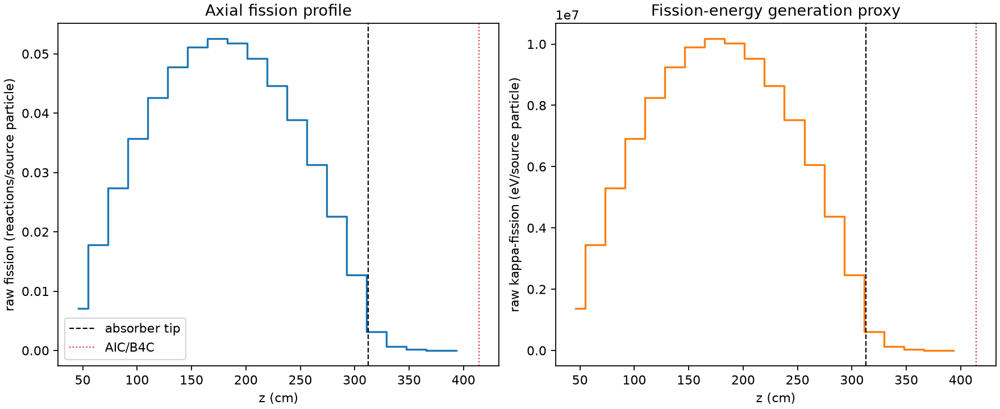
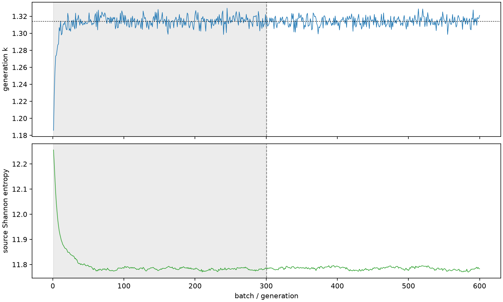

| field | value |
|---|---|
| experiment | V2-STAGE_256_OGRENCI_03-0003 |
| k | 1.3140162540815117 |
| MC standard error | 0.0001730728605869226 |
| seconds | 1177.9537163999921 |
| acceptance | not_assessed |
| convergence | review_required |
Completed is output integrity only; physical and statistical review required. Zero tallies do not prove zero production or zero uncertainty.
| diagnostic | value |
|---|---|
| geometric fuel voxels | 5280 |
| zero fission tally voxels | 0 |
| low signal fuel voxels | 525 |
| low signal fission share | 7.728209800216707e-05 |
| low signal kappa share | 7.731038084686078e-05 |
| important fission share | 0.950114033891649 |
| previous filter included | 4755 |
| duration estimate s | 1562.5173488400023 |
| actual minus estimate s | -384.5636324400102 |
| fission relative MC error | statistics |
|---|---|
| all_geometric_fuel | {"voxels": 5280, "positive_mean_voxels": 5280, "zero_mean_voxels": 0, "undefined_relative_error_voxels": 0, "median": 0.010394146714463285, "p95": 0.34555936664188636, "maximum": 0.8371721855109003} |
| low_signal | {"voxels": 525, "positive_mean_voxels": 525, "zero_mean_voxels": 0, "undefined_relative_error_voxels": 0, "median": 0.3505599374106295, "p95": 0.6792788328101858, "maximum": 0.8371721855109003} |
| important_95pct | {"voxels": 3385, "positive_mean_voxels": 3385, "zero_mean_voxels": 0, "undefined_relative_error_voxels": 0, "median": 0.008663825130138181, "p95": 0.012710111902953325, "maximum": 0.015494829545476398} |
| outside_previous_filter | {"voxels": 525, "positive_mean_voxels": 525, "zero_mean_voxels": 0, "undefined_relative_error_voxels": 0, "median": 0.3505599374106295, "p95": 0.6792788328101858, "maximum": 0.8371721855109003} |
| kappa_fission relative MC error | statistics |
|---|---|
| all_geometric_fuel | {"voxels": 5280, "positive_mean_voxels": 5280, "zero_mean_voxels": 0, "undefined_relative_error_voxels": 0, "median": 0.01038451949578389, "p95": 0.34507615259115787, "maximum": 0.835377364664845} |
| low_signal | {"voxels": 525, "positive_mean_voxels": 525, "zero_mean_voxels": 0, "undefined_relative_error_voxels": 0, "median": 0.3509626575646434, "p95": 0.6781408256994529, "maximum": 0.835377364664845} |
| important_95pct | {"voxels": 3385, "positive_mean_voxels": 3385, "zero_mean_voxels": 0, "undefined_relative_error_voxels": 0, "median": 0.008654678167668324, "p95": 0.01269673865918524, "maximum": 0.01547841755375317} |
| outside_previous_filter | {"voxels": 525, "positive_mean_voxels": 525, "zero_mean_voxels": 0, "undefined_relative_error_voxels": 0, "median": 0.3509626575646434, "p95": 0.6781408256994529, "maximum": 0.835377364664845} |
| axial bin | fission share | kappa-fission share |
|---|---|---|
| 1 | 0.013131041521350232 | 0.013131554785549298 |
| 2 | 0.03316044750200265 | 0.03316044432087075 |
| 3 | 0.05100102047217728 | 0.051000951549037665 |
| 4 | 0.06647643180750658 | 0.06647636353765629 |
| 5 | 0.07932158934342465 | 0.07932128822905156 |
| 6 | 0.08889979534759644 | 0.08889954366008651 |
| 7 | 0.09517679979821016 | 0.09517656067930214 |
| 8 | 0.09782009726977435 | 0.09781971890449863 |
| 9 | 0.09645246132833234 | 0.09645220273384099 |
| 10 | 0.09163131200681447 | 0.09163105352320461 |
| 11 | 0.08316360728758279 | 0.0831634055372573 |
| 12 | 0.07232528011655383 | 0.0723250675440001 |
| 13 | 0.05828133810107875 | 0.058281215182138996 |
| 14 | 0.041993561761130484 | 0.04199331698035605 |
| 15 | 0.02372215682911847 | 0.023722161753128253 |
| 16 | 0.005796892145464739 | 0.005798415078437023 |
| 17 | 0.0012733321194539015 | 0.0012737743165483785 |
| 18 | 0.0002948950148310727 | 0.0002949928843757317 |
| 19 | 6.658176553595672e-05 | 6.660353351203426e-05 |
| 20 | 1.135846206084097e-05 | 1.1365267147659589e-05 |
Histories include the inactive-to-active transition at batch 300. kappa-fission approximates fission energy production, not total heat deposition.

